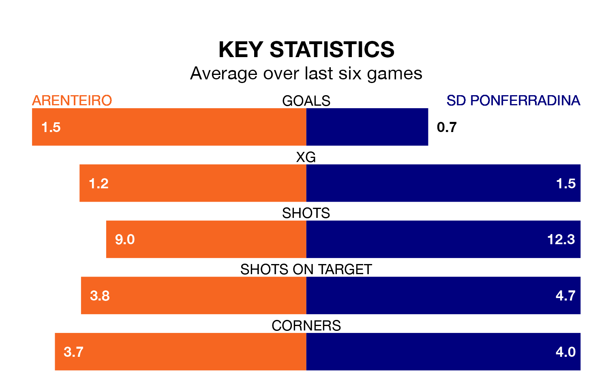

Arenteiro face a challenge to maintain their high-scoring form at home against a tight SD Ponferradina defence on Sunday.
With 39 goals in 32 games, Arenteiro are the fourth-highest scorers in Primera Division RFEF Group 1 ahead of the 5pm kick-off at Estadio de Espiñedo.
They face a Ponferradina side who have scored 33 in 32 matches, but conceded only 20 goals, putting them second among the league's tightest defences – only Gimnàstic de Tarragona have conceded fewer goals.
In Andrés Tomás Prieto Albert, Ponferradina can rely on one of the league's safest pair of hands. He has kept 12 clean sheets in his 25 appearances this season, and only one other 'keeper – Cultural y Deportiva Leonesa's Miguel Bañuz Antón – has been able to prevent the opposition scoring on more occasions in Primera Division RFEF Group 1.
In Arenteiro's net, Diego García Vázquez has 10 clean sheets in 22 games. He has conceded a goal every 99 minutes, 50% more often than the 150 minutes between goals for Prieto Albert.
The visitors are fifth in the table after 32 games, of which they have won 15 and drawn 11, earning 56 points.
The home side are two places behind Ponferradina in seventh, with 13 wins and nine draws putting them on 48 points.
Arenteiro are in reasonable form in Primera Division RFEF Group 1, with three wins and three draws from their last six games.
With two wins and two draws over that period, Ponferradina's form is worse – they have taken eight points from 18, compared to Arenteiro's 12.
Arenteiro's last match was on April 13, a 2-1 win against UE Cornellà, with Luis Gonzaga Delage Cruzado getting the goals for Arenteiro.
Ponferradina beat SD Logroñés 3-0 last time out, on April 14, with Kevin Sibille and Samuele Longo on the scoresheet.
Updated: 15:40 (UTC), 18/04/24